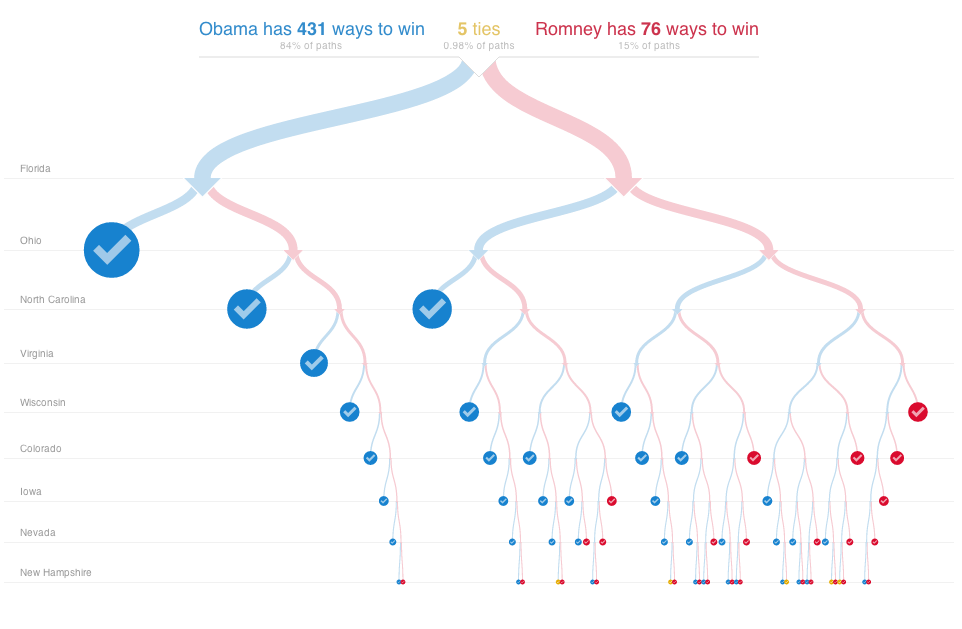
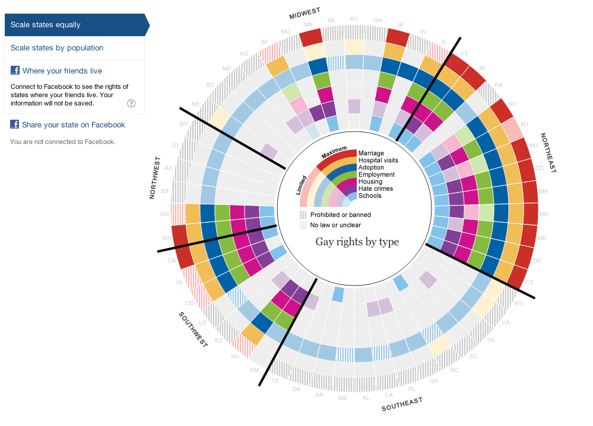

John Williams • NewCity • Fluent 2014
NewCity:
www.insidenewcity.com
@newc1ty
John Williams:
www.thudfactor.com
@thudfactor
Slides: http://tinyurl.com/heweb13d3
… is that the conference wireless works today.
… is that you leave with:
D3.js is a JavaScript library for manipulating documents based on data.
— official documentation
Perhaps a little to generic.
That means recent versions of Chrome, Firefox, Safari, Opera, and IE > 8.
Can you drop IE 8 Support?
The Carter Center: http://goo.gl/kLzdwd
PATRIC Concept: http://goo.gl/nX4mPc
PATRIC Concept pt. 2: http://goo.gl/vJp3eM
Library: http://git.io/pklTig
We use charts to discover the stories that data tell.
The first question to ask is: am I the intended audience?
Source: http://blankfiendsew.blogspot.com/2010/10/cac-update-by-request.html
D3 is probably not your tool.
Source: http://www.nytimes.com/interactive/2012/11/02/us/politics/paths-to-the-white-house.html?_r=0
Source: http://www.theguardian.com/world/interactive/2012/may/08/gay-rights-united-states
D3 is an excellent choice.
Source: http://www.joysticktales.com/images/science-pacman
and like 5,000,000 other places
D3 is for tailored education, persuasion, and journalism.
Other tools, like R, are better suited for exploratory analysis of data.
With great power comes great … flexibility.
Complexity always follows flexibility.
D3 sacrifices simplicity for power.
Requirements, Resources
InfoViz School of Witchcraft & Wizardry
Listing the Houses:
http://codepen.io/thudfactor/pen/qcfpm
It's OK if you don't understand all of this right away… we'll get there.
This one line of code does a lot.
d3.select("#target")
.selectAll("p")
.data(houses)
.enter()
.append("p")
.text(function(house) {
return house;
});
Change some of the data elements.
Codepen automatically runs as you make changes. This is not D3 updating.
Under most circumstances, use selectAll when you are binding data to the result.
Detailed discussion: http://bost.ocks.org/mike/nest/
Calling data() creates three groups:
Detailed discussion: http://bost.ocks.org/mike/join/
Let's work with objects instead of a simple array, and start doing something nifty.
Hint:
.style("background-color",function(house){ ... })Codepen automatically runs as you make changes. This is not D3 updating.
We will grant points to Gryffindor. Basic pattern:
enter())
Answer at http://codepen.io/thudfactor/pen/jxkfb
selectAll().enter() to specify how new items will look.data() to update the correct properties.What's left? Adding and removing elements, of course.
Unless you tell it otherwise, by array index.
If you modify array order: confusion.
You can pass data() a second "key" function to keep things straight.
See it in action at http://codepen.io/thudfactor/pen/yzIbe
All of this works pretty much the same way: pass functions configuration functions, use the result to operate on data.
svg is an HTML elementg ("group") is not divtext applies neither word-wrapping nor formatting.foreignObject to embed HTML in SVGJQuery might work. Or it might not.
There are enough similarities to be confusing.
D3 can work in both.
Background photo: Cian Ginty
http://flic.kr/p/4DLuNC